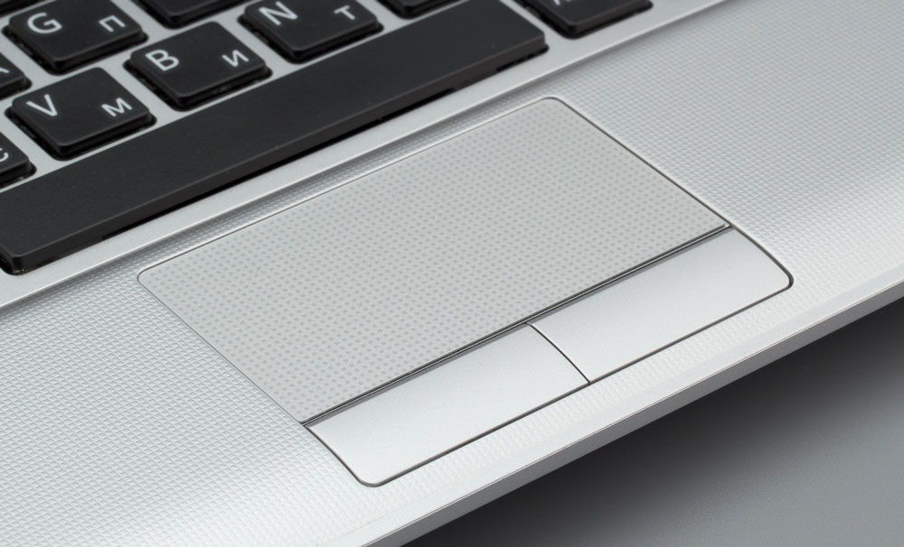
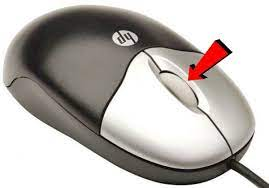

Интерактивная карта
Интерактивная карта на которой вы сможете увидеть множество электростанций.
Мини-карта
Управление
Тачпадом
Вы можете приближать и уменьшать или передвигаться по карте двумя пальцами
Средняя кнопка мыши
Для приблежения используйте: Ctrl+Колёсо_мыши
Для передвижения зажмите колёсико мыши